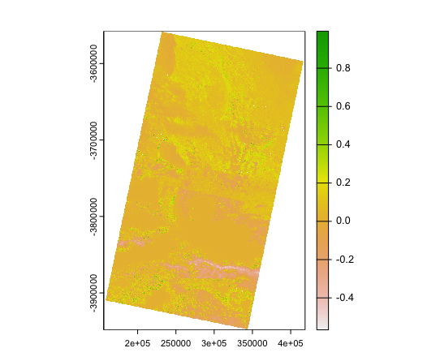
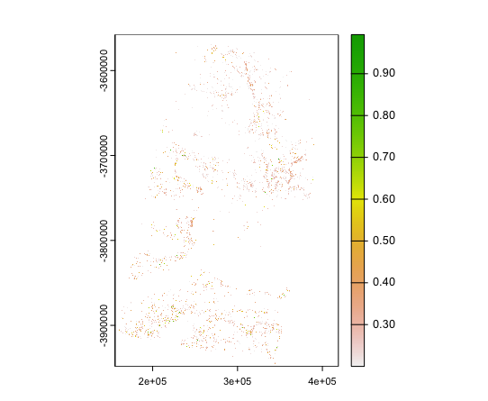
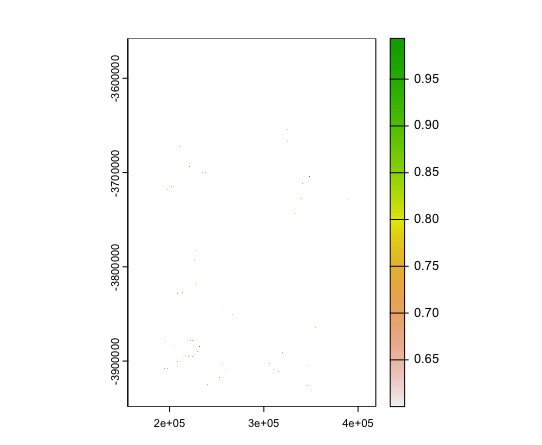
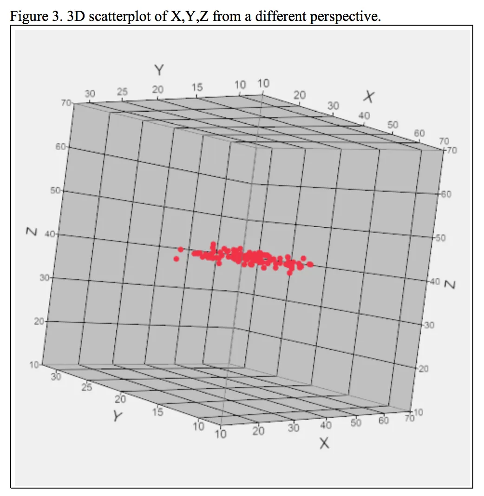

3 Data Enhancement
Terms
- .MTL file: store the data of Earth-sun distance.
- NDVI (Normalised Difference Vegetation Index).
- NDMI (Normalized Difference Moisture Index).
3.1 Summary
The process of remote sensing based on three essential components: light sources (illuminentes), target (Earth ground), and sensors. The light source could be the same as the sensors (active sensor, SAR).
To store the information of targets, the radiance would be “translated” into the Digital Number (DN), which is the raw data of ground information. Those raw data would be combined with theirs location, and then it could form the map. (source: OpenLibrary)
3.1.1 Radiance & Reflectance
The radiance is used to describe the light that received by sensors, while reflectance relates to the properties of the targets.
- Radiance: how much light the sensor can receive (the radiation leaving the Earth).
- Reflectance: the ratio of light leaving a target to the light striking the target.
- BOA (Bottom of Atmosphere) reflectance: reflected by the target on Earth surface.
- TOA (Top of Atmosphere) reflectance: regard atm as the target, can be converted from TOA radiance (path radiance).
3.1.2 Correction
The accuracy of remote sensing data may have its limit due to several reasons, such as the relative position between satellites and ground (view angle), atmospheric scattering, property of instruments. Therefore, we need to do the corrections before analyzing the data.
There are four types of corrections:
Geometric correction
Atmospheric correction
Orthorectification / Topographic correction
Radiometric correction
A useful atmospheric correction called Dark Object Subtraction (DOS). The basic assumption in the algorithm is that the darkest pixel in the image should not have any light. Thus, any reflectance from this pixel should caused by the atmospheric. As those light doesn’t achieve the ground but being reflected to the sensors. Therefore, all pixel should subtract this impact.
3.1.3 Data enhancement
Tasseled Cap function -> Principal Component Analysis (PCA)
The PCA is a process that transform the data which has reduced its dimensionality. This is to highlight certain feature of an image.
3.1.4 Data Pre-process
A problem of remote sensing data is that the area of one image may not cover the entire study area, as the satellites are moving relative to the ground and scan the land square by square. The date of different data square would be varied. Therefore, to obtain the ground information of whole study area, the data should be accessed over a period of time. Then, the images should be merged together to form the targeted area.
The quality of remote sensing data are tired, which would be checked in here.
In this study, the ground information of Cape Town would be explored.

As shown in the figure, two square of remote sensing data would be used. There is an overlapped area between the two data set, and it should be eliminated in the merging process (called Mosaicking in remote sensing). The merging process is basically calculate the average value from different data square for the overlapped area. As the study area may not precisely locate within the square in the selected time period, this is a compromise for the provided data.
3.1.5 Information Enhancement
The remote sensing data contains lots of information, selecting and combining those information is important for study what we focus on. Using Normalised Difference Vegetation Index (NDVI) as an example to show how the combination of bands could generate useful information.
The equation of NDVI is: NDVI = (NIR - Red) / (NIR + Red)
In Landsat data set, it is: NDVI = (B5 - B4) / (B5 + B4)

The value of NVDI indicate the component or state of the plants. If the NVDI > 0.2, it represents the area with leaf; if the NVDI > 0.6, it represents healthier leaf.

According to the division, the leaf condition could be detected in Cape Town:


The figures show that few health leaf in the Cape Town, probably because the time period of the data is around May, when it’s close to winter in the Southern Hemisphere.
3.2 Application
PCA is a useful tool to reduce the noise for remote sensing data. Uddin, Mamun, & Hossain (2021) concluded that PCA-based feature reduction could be efficient for hyperspectral image (HSI) classification, and they assessed the performance by using a Support Vector Machine (SVM) classifier. Since HSI contains more bands than normal color images, reduce uneccessary information would enhance the accuracy of classification.

However, only two dataset they used for analysis might not be sufficient, as particular place might has its occasionality in terms of atmosphere condition, surface structure, etc.
3.3 Reflection
There are other ways to process and enhance the remote sensing data, and substantially they are used to reduce the amount of data.
For example, using moving windows to filter the data, essentially, it’s to increase the contrast of the image while reducing the noise pixels.
Comparing to directly process the data, Principle Component Analysis (PCA) is a more advanced, or abstract technique that replace the variables by their correlations. Then, using the variation in each fitting line, it could calculate the importance of each correlation. Essentially, PCA could be used to reduce the dimension of data. I found Kim (2022) explained the PCA very well. He suggested that the process of PCA likes an orthorectification correction, and those dimensions in which data has not variation should be filtered out.

3.4 Reference
Uddin, M.P., Mamun, M.A. and Hossain, M.A., 2021. PCA-based feature reduction for hyperspectral remote sensing image classification. IETE Technical Review, 38(4), pp.377-396.